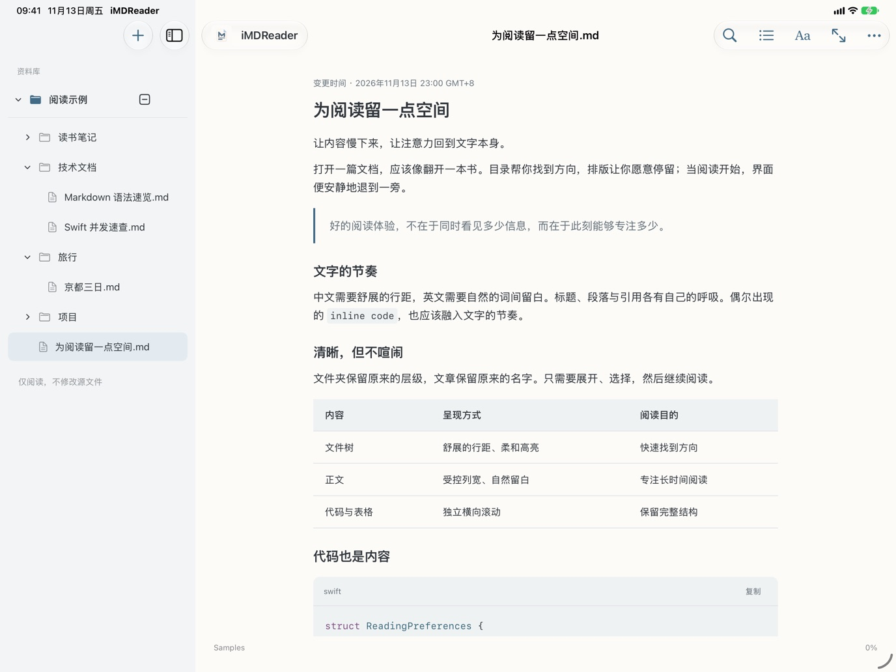
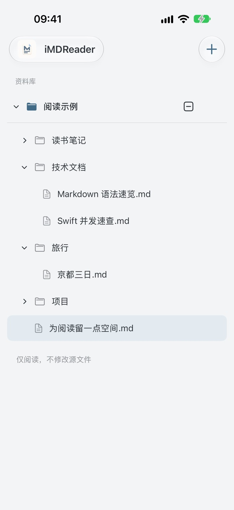
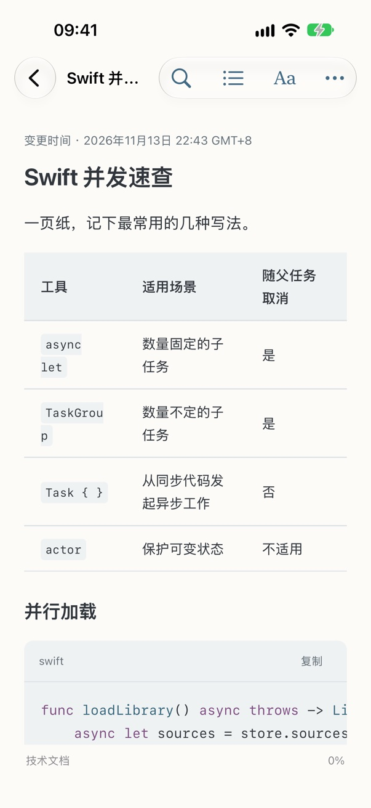
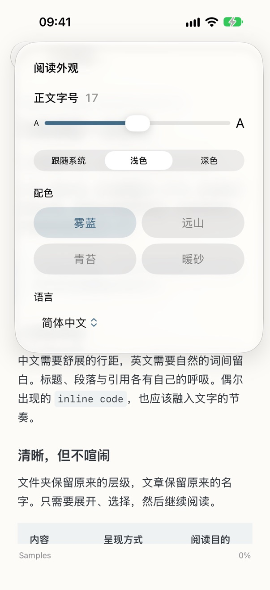
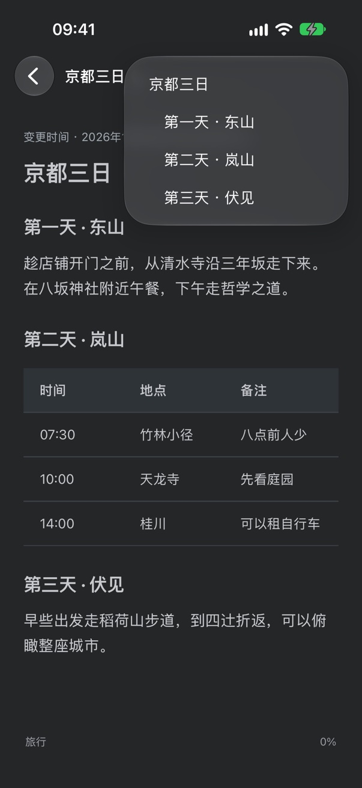
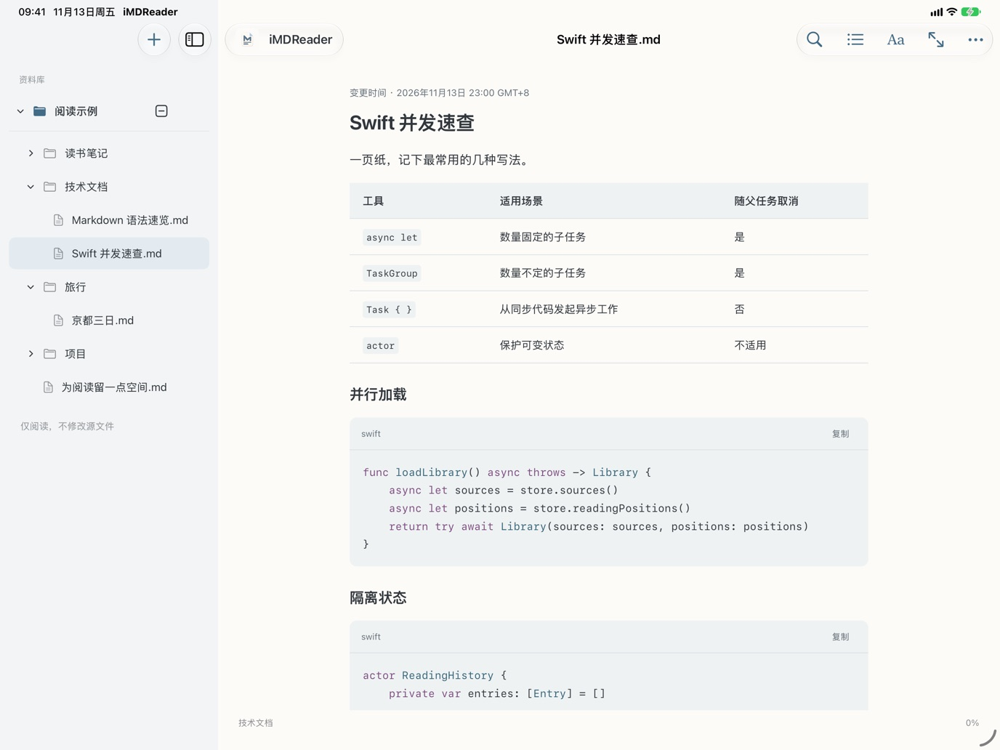
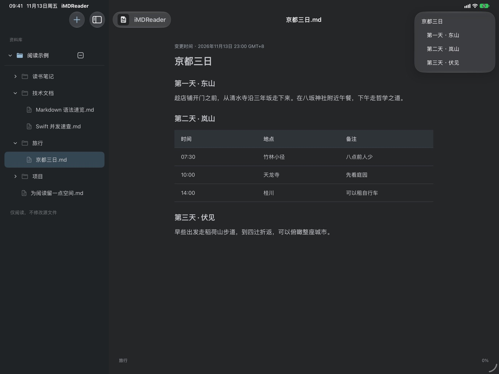

文件、文件夹与 GitHub。
单篇 Markdown、本地文件夹，或 GitHub 仓库、子目录与单篇文档。保留原有目录层级，常读内容一键置顶。
为阅读，留一点空间。
原生、只读的 Markdown 阅读器，适用于 Mac、iPhone 和 iPad。完全免费，没有内购，不收集数据。
Mac 0.4.1 · iPhone 与 iPad 商店版 0.4.0，0.4.1 即将推出

表格、任务列表、代码高亮与文章目录，在小屏幕上同样清晰。




单篇 Markdown、本地文件夹，或 GitHub 仓库、子目录与单篇文档。保留原有目录层级，常读内容一键置顶。
不编辑、不移动、不删除原文件，也不执行文档中的代码。移除来源只是从阅读器里移除引用。
12–26pt
浅色、深色或跟随系统，四套阅读配色。
5 种语言
简体中文、繁體中文、English、日本語、한국어，随时切换。
免费
没有内购、广告或账号，不收集任何数据。
来源、置顶与排序和阅读位置经你的私有 iCloud 在设备间同步；文档正文和令牌不会上传，可随时关闭。
用“继续阅读”小组件回到原位置，在 Spotlight 中搜索读过的文章，或让 Siri 继续阅读。
代码高亮、一键复制与文内查找，资料库始终在手边。

柔和的深色主题，文章目录一点即达。

0.4.1 · macOS 14 或更高版本
Apple Silicon 与 Intel 通用，已签名并通过 Apple 公证。
0.4.0 · iOS / iPadOS 17 或更高版本
0.4.1 即将推出。